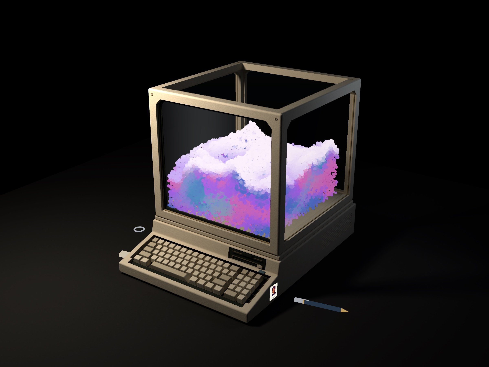
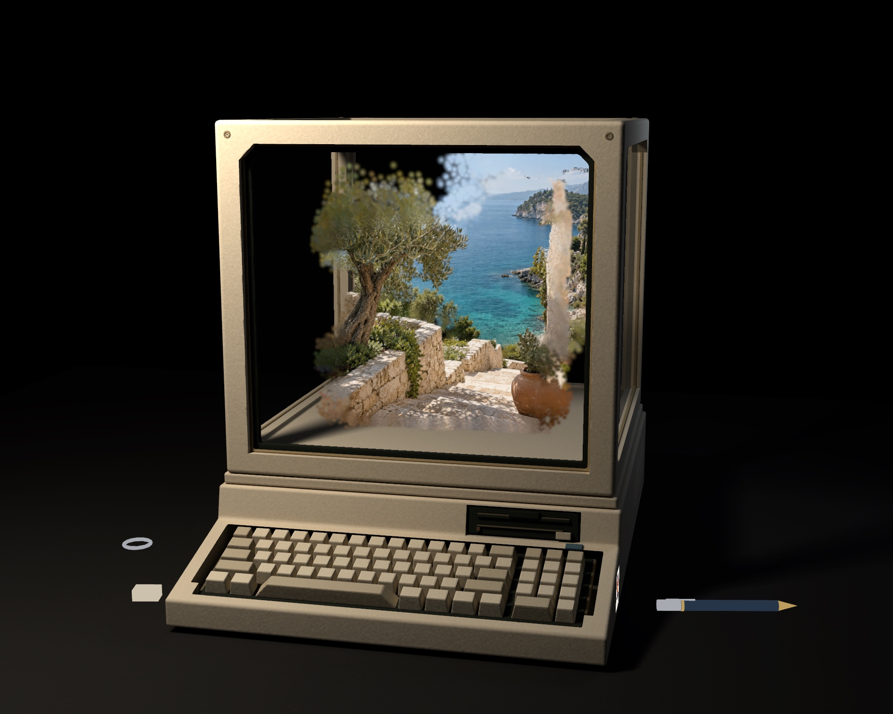
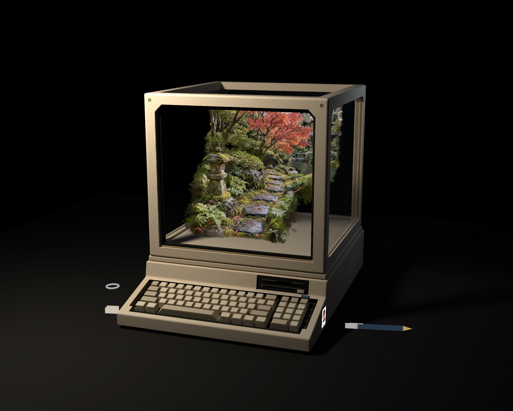
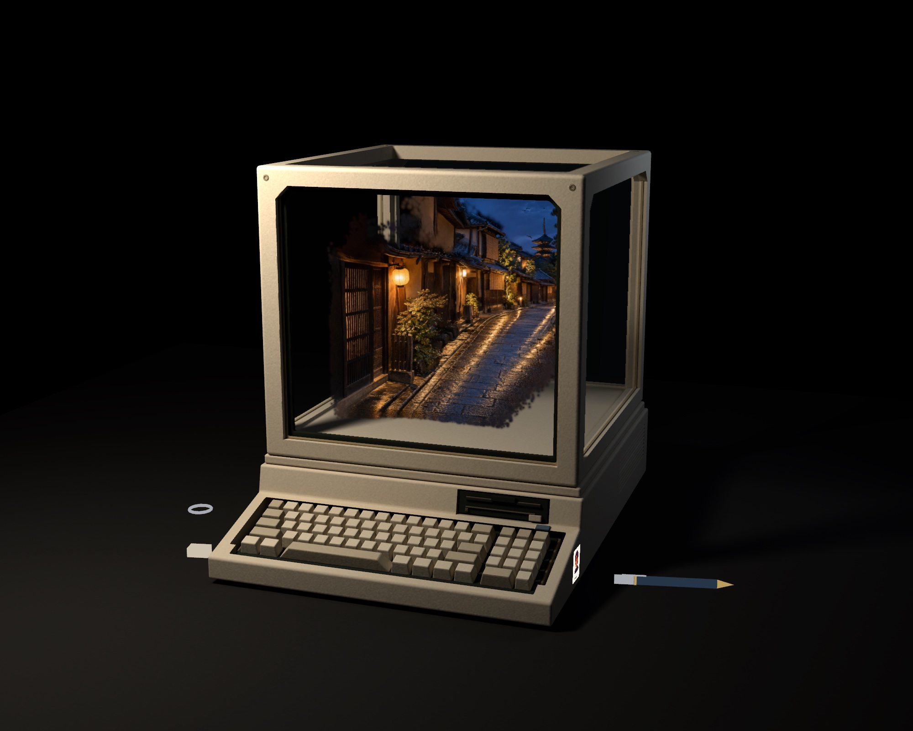
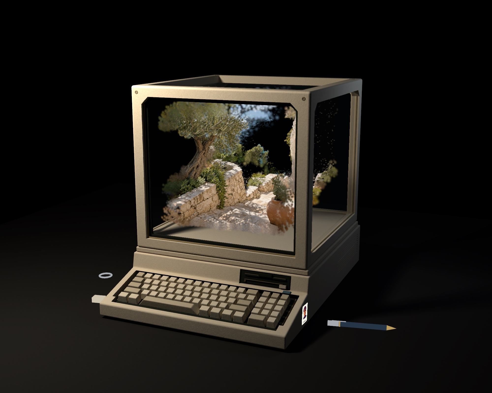
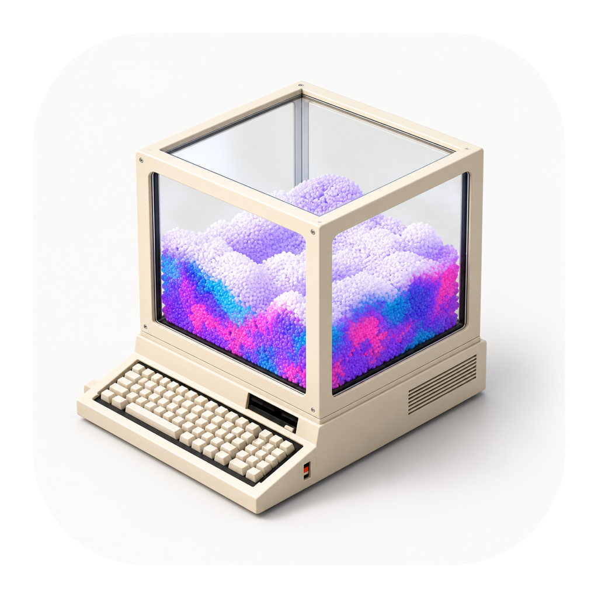

本机制作
SHARP 在 Mac 上运行。照片和生成内容不上传到我们的服务器，完整包已包含模型与运行环境。
GEMOS STILL · THE MEMORY TERMINAL
让普通的一张照片，
成为可以转动、靠近、重温的小世界。
为 Apple 芯片而作 · macOS 14 及以上

A LITTLE MORE THAN A PHOTO
旅行时的一瞥，窗边的一束光，或是想念的日常。选一张照片，Still 会在你的 Mac 上重建它的空间层次，再把它放进这台小小的复古电脑里。

01 / FROM PHOTO TO SPACE
从近处的石阶，到远方的海。
轻轻转动，发现照片里的前后与远近。
本组海边源图由 AI 创作，并经 SHARP 实际重建、Mac 原生渲染。单张照片无法完整还原未被拍到的部分。
海边源图由 AI 创作，经 SHARP 实际重建。滚动画面来自 Mac 应用的真实相机环绕；单张照片无法完整还原未被拍到的部分。
02 / A WORLD TO KEEP
一座雨后的庭院，一条入夜的街。
从照片到可以转动的小世界，
让平常的瞬间，多一种重温的方式。

石灯、苔藓与红枫，在小小的空间里有了远近。

一盏暖灯，一条雨后的街，把夜色也收藏起来。
庭院与夜街源图由 AI 创作，经 SHARP 在本机实际重建；以上为应用内三维场景的真实渲染。
03 / MADE TO BE SHARED
从卡片入仓到风景显现，
用自动运镜与钢琴配乐，
把整个收藏过程分享出去。

影片主场景由本机逐帧渲染。九宫格片尾使用内置示例视频，4K 导出不会增加原素材细节。
QUIETLY NATIVE
SHARP 在 Mac 上运行。照片和生成内容不上传到我们的服务器，完整包已包含模型与运行环境。
AppKit 界面，SceneKit 与 Metal 渲染。选择照片、管理记忆、保存影片，遵循熟悉的 Mac 操作。

YOUR NEXT MEMORY STARTS HERE
Gemos Still for Mac 0.4.2 预览版
现在用手机浏览？
复制页面链接，回到 Mac 再下载。
ZIP · 2.98 GB · 内置本机模型
这是 Mac 软件。你可以先收藏此页，回到 Mac 后下载，或打开网页版体验。
Apple 芯片 M1 或更新
macOS 14 或更新
建议 16 GB 统一内存
下载与解压预留约 8 GB 空间
当前是未经过 Apple 公证的预览版，macOS 可能阻止打开。请先阅读下方安装说明。暂不支持 Intel Mac，8 GB 机型尚未验证。
A FEW THINGS TO KNOW
解压 ZIP，把 Gemos Still.app 拖入“应用程序”。完整包已经内置模型和推理环境，无需安装 Python。首次打开后，可以先点“查看示例”，再选择自己的照片。
作者目前没有 Apple Developer 账号，因此这个版本只有本地签名，尚未通过 Apple 公证。macOS 可能阻止它运行。只有在你确认信任下载来源时，才按 Apple 官方说明在“系统设置 → 隐私与安全性”中检查是否有“仍要打开”选项；不同系统版本的提示可能不同。不要关闭系统整体安全保护。也可以直接使用网页版。
Mac 完整包已内置模型。生成时照片与结果留在本机，无需调用在线生成服务。记忆文件会占用你的 Mac 储存空间；只有你主动导出并分享时，其他人才会收到内容。
这是单图空间重建，不是多视角扫描。前景、中景、远景分明的照片通常更适合展示层次；大角度转到背面时，可能出现缺失、拉伸或不自然的区域。